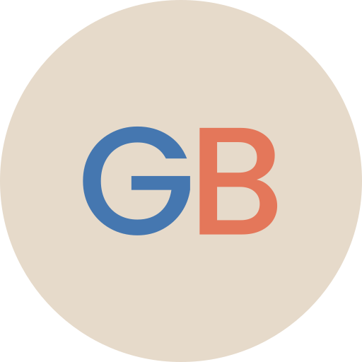

Öğrenci ve ebeveyn koçluğu
Meslek seçimi, tercih dönemi ve okulun evdeki yansımaları için.
“Seçeneğim yok” dediğiniz yerde yeni bir seçenek görmek için: Hikâyelerle Koçluk.
Profesyonel Koç · PCC · AATC

Hakkımda
Koç olmadan önce edebiyat öğretmeniydim ve hikâye anlatıyordum. Bugün hikâyeleri başka bir amaçla dinliyorum: kişinin kendi yolunu görmesi için.
Külkedisi'nin perisi baloya gitmez, prensle konuşmaz, karar vermez. Yalnızca yolu görünür kılar. Koçluğu ben de böyle görüyorum.
Profesyonel Koç · PCC, AATC Hikâyelerle Koçluk kitabının yazarıHizmetler
Her çalışma aynı yerden başlar: sizin hikâyenizden.
Meslek seçimi, tercih dönemi ve okulun evdeki yansımaları için.
“Nereden başlayacağımı bilmiyorum” diyen meslek sahipleri için.
Toplantılarda söylenemeyenlerin konuşulabildiği bir alan.
Sahnede, sunumda ve kurumda kendi hikâyenizi anlatmak için.
Öğrenci koçları ve mesleğe yeni başlayanlar için.
Hangisinin size uygun olduğunu birlikte konuşalım.
Bana yazın →Kitap
“Hikâyeler bir eve dönüş formülüdür.”
Alanında Türkiye'de bir ilk: hikâyeyi koçluğun merkezine alan bir yöntem.
İletişim
Kurumsal çalışmalar için de aynı adreslerden ulaşabilirsiniz.